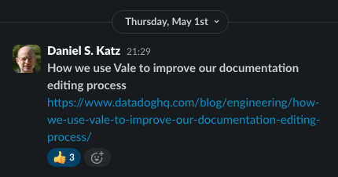
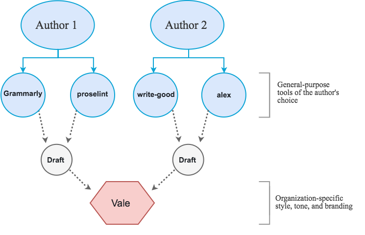
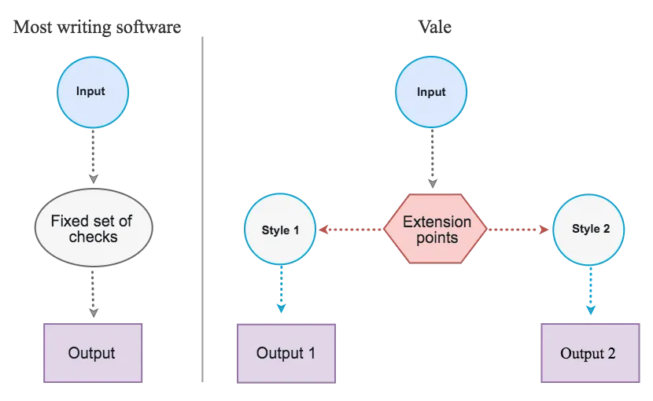
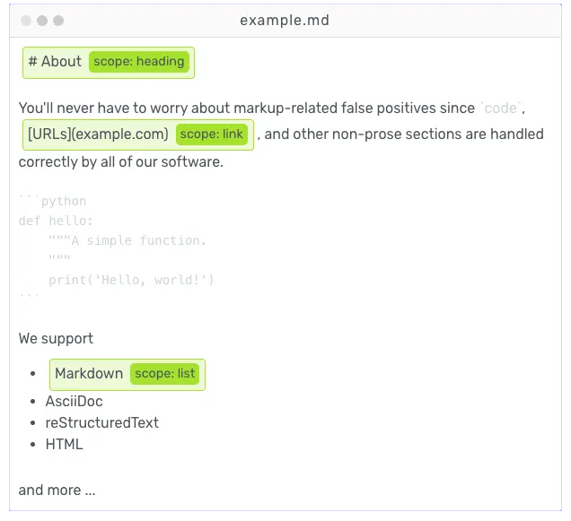
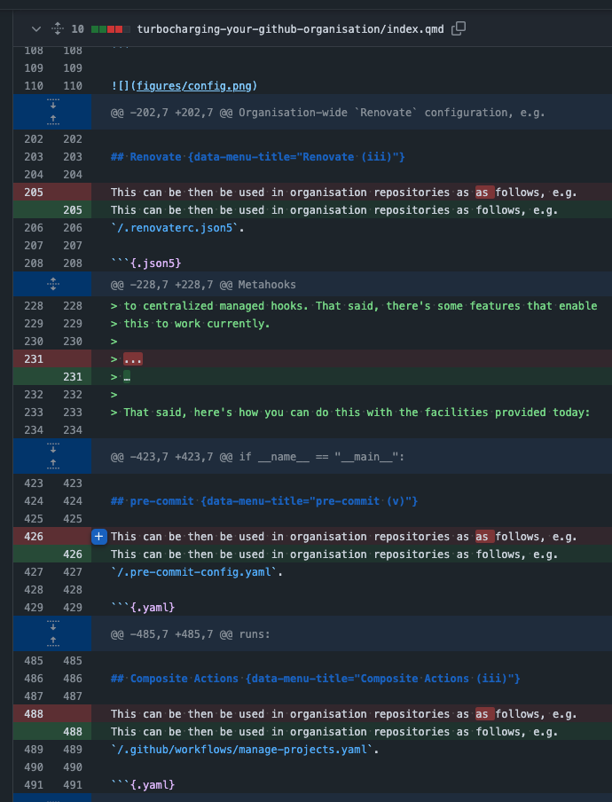
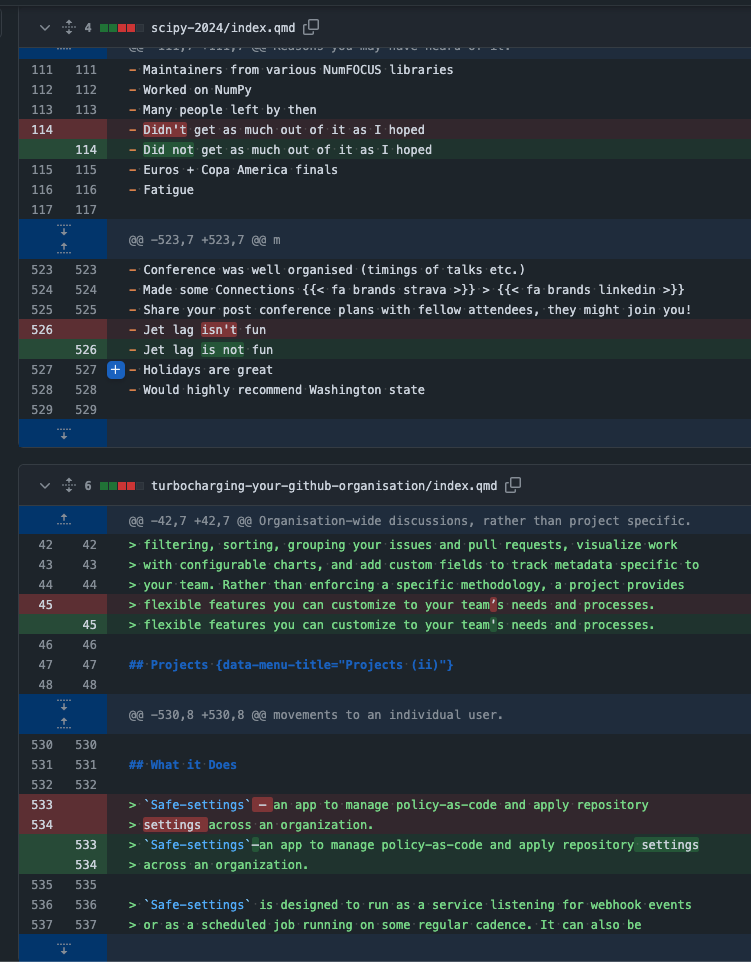
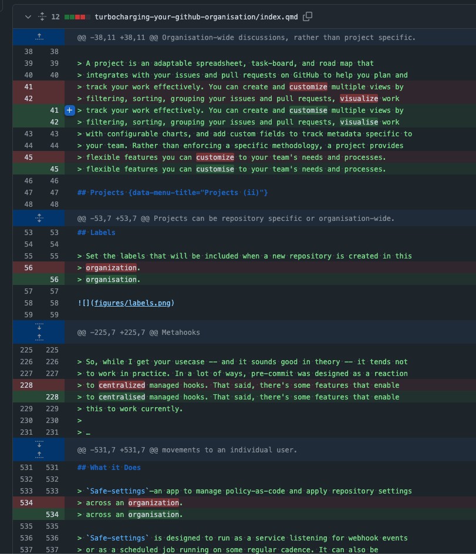
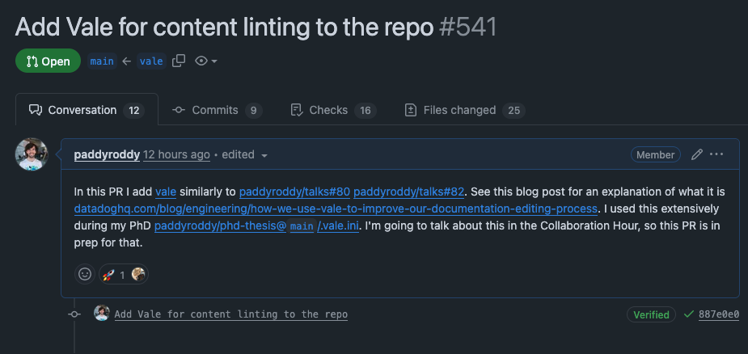

2025-06-03
Scan to view the slides

Vale is a command-line tool that brings code-like linting to prose. Vale is cross-platform, written in Go, and available on GitHub.
Vale is not a general-purpose writing aid. It does not teach you how to write; it is a tool for writers.
Vale focuses (primarily) on the style of writing rather than its grammatical correctness: making it fundamentally different from, for example, Grammarly.
Vale focuses on ensuring consistency across many authors (according to customisable guidelines) rather than the general “correctness” of a single author’s work.

One of Vale’s most important features is its ability to support external styles through its extension system, which only requires some familiarity with the YAML file format (and, optionally, regular expressions).

# `extends` specifies the extension point you're using. Here, we're
# using `substitution` to ensure correct usage of some technical and
# brand-specific terminology.
extends: substitution
# `message` allows you to customize the output shown to your users.
message: Use '%s' instead of '%s'.
# We're setting this rule's severity to `error`, which will cause
# CI builds to fail.
level: error
# We're using case-insensitive patterns.
ignorecase: true
swap:
"(?:LetsEncrypt|Let's Encrypt)": Let's Encrypt
'node[.]?js': Node.js
'Post?gr?e(?:SQL)': PostgreSQL
'java[ -]?scripts?': JavaScript
linode cli: Linode CLI
linode manager: Linode Manager
linode: Linode
longview: Longview
nodebalancer: NodeBalancerThis level of understanding gives you fine-grained control over the linting process. This includes the ability to limit rules to certain sections (e.g. only headings) or ignore sections entirely (block and inline code are ignored by default).

Vale is a 100% open source, MIT-licensed project that consists of many parts:
| Name | Tech | Info |
|---|---|---|
| vale | Go | The main repository containing the Vale command-line interface. |
| vale-ls | Rust | An implementation of the Language Server Protocol (LSP) for the Vale command-line tool. |
| Name | Tech | Info |
|---|---|---|
| vale.sh | Svelte | Website and documentation for the Vale CLI and related projects. |
| vale-action | TypeScript | The official GitHub Action for Vale – install, manage, and run Vale with ease. |
| Name | Tech | Info |
|---|---|---|
| packages | YAML | A collection of pre-packaged, Vale-compatible style guides and configurations. |
| vale-native | Go | A native messaging host for the Vale CLI: Use your local configurations in Chrome, Firefox, Opera, and Edge. |
.vale.ini# Core settings appear at the top
# (the "global" section).
[formats]
# Format associations appear under
# the optional "formats" section.
[*]
# Format-specific settings appear
# under a user-provided "glob"
# pattern.Core settings:
| Name | Type | Description |
|---|---|---|
| StylesPath | string | Path to all Vale-related resources. |
.vale.ini| Name | Type | Description |
|---|---|---|
| Packages | string[] | List of packages to download and install. |
| Vocab | string[] | List of vocabularies to load. |
| MinAlertLevel | enum | Minimum alert level to display. |
| IgnoredScopes | enum | List of inline-level HTML tags to ignore. |
| SkippedScopes | enum | List of block-level HTML tags to ignore. |
The /.vale.ini file:
StylesPath = .github/styles
# https://github.com/errata-ai/packages
Packages = proselint,\
RedHat,\
write-good
[formats]
qmd = md
[*.{md,qmd}]
BasedOnStyles = proselint,\
RedHat,\
Vale,\
write-good
# Disable
RedHat.Definitions = NO
RedHat.Ellipses = NO
RedHat.GitLinks = NO
RedHat.Headings = NO
RedHat.PascalCamelCase = NO
RedHat.PassiveVoice = NO
RedHat.ReadabilityGrade = NO
RedHat.Slash = NO
RedHat.Spelling = NO
RedHat.TermsErrors = NO
Vale.Spelling = NO
write-good.E-Prime = NO
write-good.Passive = NO
write-good.TooWordy = NO
# `vale sync` in CI means the packages are then linted, so turn them off
[.github/styles/**]
BasedOnStyles =The /.gitignore file:
# We want to ignore our StylesPath *except* for our local
# `vocabularies/Base` directory.
.github/styles/*
!.github/styles/config/
.github/styles/config/*
!.github/styles/config/vocabularies/
.github/styles/config/vocabularies/*
!.github/styles/config/vocabularies/BaseStyles specified in Packages can be retrieved by running vale sync, hence the .gitignore file.
Vale comes with a single built-in style named Vale that implements a few rules: Spelling, Terms, Avoid and Repetition.
The following packages can be retrieved with vale sync:
alex: An implementation of the guidelines enforced by the alex linter.Google: An implementation of the Google Developer Documentation Style Guide.Joblint: An implementation of the guidelines enforced by the Joblint linter.Microsoft: An implementation of the Microsoft Writing Style Guide.proselint: An implementation of the guidelines enforced by the proselint linter.Readability: An implementations of many popular “readability” metrics.write-good: An implementation of the guidelines enforced by the write-good linter.More rules can be found at: https://hyperlint.com/vale/rules.
/.github/styles/custom/no-contractions.yml
extends: substitution
message: Use '%s' instead of '%s.'
level: error
ignorecase: true
swap:
aren't: are not
can't: cannot
couldn't: could not
didn't: did not
doesn't: does not
don't: do not
hasn't: has not
haven't: have not
how'll: how will
how's: how is
isn't: is not
it'll: it will
it's: it is
shouldn't: should not
that'll: that will
that's: that is
they'll: they will
they're: they are
wasn't: was not
we'll: we will
we're: we are
we've: we have
weren't: were not
what'll: what will
what's: what is
when'll: when will
when's: when is
where'll: where will
where's: where is
who'll: who will
who's: who is
why'll: why will
why's: why is
won't: will not
you're: you areOne might be happy to accept warnings and therefore it does not make sense to run as a pre-commit hook.
jobs:
lint-prose:
runs-on: ubuntu-latest
steps:
- name: Checkout source
uses: actions/checkout@11bd71901bbe5b1630ceea73d27597364c9af683 # v4
- name: Run Vale
uses: errata-ai/vale-action@d89dee975228ae261d22c15adcd03578634d429c # v2
env:
GITHUB_TOKEN: ${{ secrets.GITHUB_TOKEN }}
with:
fail_on_error: true
filter_mode: nofilter
reporter: github-pr-review



Vale.Spelling = NO) in .vale.ini or inline.Linting Prose with Vale - https://paddyroddy.github.io/talks